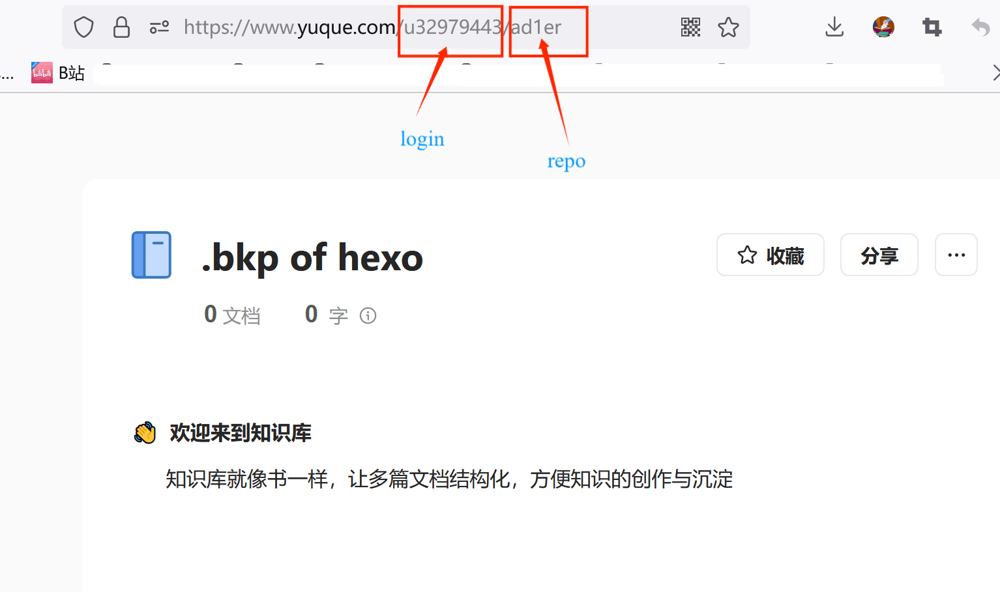

🌟🌟🌟🌟
日常除了用原生.md写笔记，还尝试过yuque,体验4星，主要是凭它的公益计划活动可以领一年专业会员hh。回到博客，之前担心过博客数据丢失问题，升级了语雀299/年的超级会员，所以干脆用它做个临时备份数据库。说干就干。
实现将yuque变为hexo备用数据库
0x0 prequisite
以下是我们将用到的工具：
1.yuque-hexo插件
2.已注册好的一个Github账户
3.已注册好的一个腾讯云账号
4.一个语雀超级会员账号
4.默认已有搭建好的hexo博客
大致思路：
借助yuque webhook触发腾讯云serverless云函数，云函数再触发github actions去自动执行hexo的命令从而实现同步。
0x01 Operations
basic
首先需要安装插件：https://github.com/x-cold/yuque-hexo
npm i -g yuque-hexo编辑hexo根目录下的package.json，添加如下内容
"yuqueConfig": {
"postPath": "source/_posts",
"cachePath": "yuque.json",
"mdNameFormat": "slug",
"adapter": "hexo",
"concurrency": 5,
"baseUrl": "https://www.yuque.com/api/v2",
"login": "u32979443",
"repo": "ad1er",
"token": "语雀token",
"onlyPublished": true,
"onlyPublic": true
},
"devDependencies": {
"yuque-hexo": "^1.9.5"
},
"hexo": {
"version": "5.4.2"
},必要内容参数说明：
"baseUrl": "这个是固定的，不用更改",
"login": "语雀账户设置-->账户管理-->个人路径：https://www.yuque.com/后面的这串字符",
"repo": "知识库路径名称",
"token": "语雀token",
修改”scripts”：
"scripts": {
"build": "hexo generate",
"clean": "hexo clean",
"deploy": "hexo deploy",
"server": "hexo server",
"sync": "yuque-hexo sync",
"clean:yuque": "yuque-hexo clean"
},yuque-hexo sync 命令会将yuque的文章下载到source/_post,然后hexo g && hexo s/d 就可访问本地127.0.0.1:4000查看了.
else
- 图片无法正常加载
编辑：主题/layout/post.ejs,添加这句话。<meta name="referrer" content="no-referrer" />
github actions自动更新
创建一个新的私有仓库，任意命名。
站点根目录执行如下：
git init
git add .
git commit -m "first commit"
git remote add origin https://github.com/name/博客名.git
git push -u origin master
设置一个github token,以后只用勾选repo这个选项即可
来到新仓库–>secret–>分别添加GH_REF/GE_TOKEN，其中GH_REF是你博客的仓库地址，不加http://头。
新仓库–>actions–>set up a workflow yourself–>编辑内容
name: Blog CI/CD
on: [push, repository_dispatch]
jobs:
blog-cicd:
name: Hexo blog build & deploy
runs-on: ubuntu-latest
env:
TZ: Asia/Shanghai
steps:
- name: Checkout codes
uses: actions/checkout@v2
- name: Setup node
uses: actions/setup-node@v1
with:
node-version: "12.x"
- name: Cache node modules
uses: actions/cache@v1
with:
path: ~/.npm
key: ${{ runner.os }}-node-${{ hashFiles('**/package-lock.json') }}
- name: Install dependencies
run: |
npm install hexo-cli -g
npm install yuque-hexo -g
npm install
yuque-hexo sync
- name: Generate files
run: hexo generate
- name: Deploy blog
run: |
git clone "https://${{ secrets.GH_REF }}" deploy_git
mv ./deploy_git/.git ./public/
cd ./public
git config user.name "username here"
git config user.email "emailhere"
git add .
git commit -m "GitHub Actions Auto Builder at $(date +'%Y-%m-%d %H:%M:%S')"
git push --force --quiet "https://${{ secrets.GH_TOKEN }}@${{ secrets.GH_REF }}" master:master
对照修改一下个人信息，每当你push/repo_dispatch的时候都会自动更新。
配置serverless 云函数
这个云函数也要收费，但是免费额度一般够用。
注册腾讯云账号：https://console.cloud.tencent.com/scf/
新建函数服务—>空白函数，内容如下
# -*- coding: utf8 -*-
import requests
def main_handler(event, context):
r = requests.post("https://api.github.com/repos/username/repo name/dispatches",
json = {"event_type": "run-it"},
headers = {"User-Agent":'curl/7.52.1',
'Content-Type': 'application/json',
'Accept': 'application/vnd.github.everest-preview+json',
'Authorization': 'token 你的GH_TOKEN'})
if r.status_code == 204:
return "This's OK!"
else:
return r.status_code参数说明：
'Authorization': 'token (你的GH_TOKEN)'
#你只需要修改()里的内容测试，直到返回”This is OK!”—>同时你的github actions会自动去执行之前在main.yml设定的，检查博客情况就可以了。
回到腾讯云—>函数服务–>触发管理—>创建触发器，一般保持默认设置—>会生成一个访问路径，记下来！—>回到yuque—>知识库的设置—>添加web hook url:填写刚刚生成的路径，🆗！
_N0nsence:uh,语雀最近发生了几次P0事故，相对安全的还是本地存储._